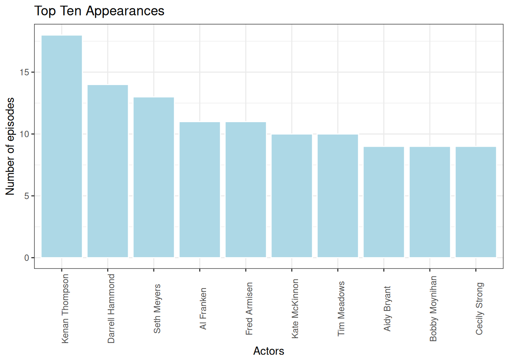

library(tidyverse)
library(mdsr)
library(DBI)
library(RMariaDB)
library(dbplyr)
library(duckdb) # R package for building a duckdb database locallySQL project
NOTE: This demonstration has been adapted from Jo Hardin’s classnotes.
NOTE: This is joint work with Abhishek Chakraborty.
load packages and connect to database server
As an example, we will consider the Saturday Night Live datasets available on the snldb GitHub repo. Data is scraped from SNL archives and IMDb by Hendrik Hilleckes and Colin Morris.
con_snl <- DBI::dbConnect(duckdb::duckdb(), dbdir = "snl_db")SHOW TABLES;| name |
|---|
| casts |
accessing data (csv files) from GitHub (or, elsewhere)
Notice that there are eleven .csv files available in the output folder. Let’s look at the casts dataset in R, so that we understand the data we want to load into the database.
# read in the data
casts <- readr::read_csv("https://raw.githubusercontent.com/hhllcks/snldb/refs/heads/master/output/casts.csv")Rows: 614 Columns: 8
── Column specification ────────────────────────────────────────────────────────
Delimiter: ","
chr (1): aid
dbl (5): sid, first_epid, last_epid, n_episodes, season_fraction
lgl (2): featured, update_anchor
ℹ Use `spec()` to retrieve the full column specification for this data.
ℹ Specify the column types or set `show_col_types = FALSE` to quiet this message.glimpse(casts)Rows: 614
Columns: 8
$ aid <chr> "A. Whitney Brown", "A. Whitney Brown", "A. Whitney Br…
$ sid <dbl> 11, 12, 13, 14, 15, 16, 5, 39, 40, 41, 42, 45, 46, 21,…
$ featured <lgl> TRUE, TRUE, TRUE, TRUE, TRUE, TRUE, TRUE, TRUE, TRUE, …
$ first_epid <dbl> 19860222, NA, NA, NA, NA, NA, 19800409, 20140118, NA, …
$ last_epid <dbl> NA, NA, NA, NA, NA, NA, NA, NA, NA, NA, NA, NA, NA, NA…
$ update_anchor <lgl> FALSE, FALSE, FALSE, FALSE, FALSE, FALSE, FALSE, FALSE…
$ n_episodes <dbl> 8, 20, 13, 20, 20, 20, 5, 11, 21, 21, 21, 18, 17, 20, …
$ season_fraction <dbl> 0.4444444, 1.0000000, 1.0000000, 1.0000000, 1.0000000,…summary(casts) aid sid featured first_epid
Length:614 Min. : 1.00 Mode :logical Min. :19770115
Class :character 1st Qu.:15.00 FALSE:451 1st Qu.:19801215
Mode :character Median :26.00 TRUE :163 Median :19901110
Mean :25.47 Mean :19909634
3rd Qu.:37.00 3rd Qu.:19957839
Max. :46.00 Max. :20141025
NA's :564
last_epid update_anchor n_episodes season_fraction
Min. :19751011 Mode :logical Min. : 1.00 Min. :0.04167
1st Qu.:19850112 FALSE:541 1st Qu.:19.00 1st Qu.:1.00000
Median :19950225 TRUE :73 Median :20.00 Median :1.00000
Mean :19944038 Mean :18.73 Mean :0.94827
3rd Qu.:20040117 3rd Qu.:21.00 3rd Qu.:1.00000
Max. :20140201 Max. :24.00 Max. :1.00000
NA's :597 # save the dataset as a .csv file on your (local) computer
write_csv(casts, "casts.csv") data types in SQL
Consult data types for details.
importing data
Once the database is set up, you will be ready to import .csv files into the database as tables. Importing .csv files as tables requires a series of steps:
- a USE statement that ensures we are in the right database.
- a series of DROP TABLE statements that drop any old tables with the same names as the ones we are going to create.
- a series of CREATE TABLE statements that specify the table structures and field types.
- a series of COPY (or LOAD DATA for MySQL) statements that read the data from the .csv files into the appropriate tables.
USE snl_db;
DROP TABLE IF EXISTS casts;
CREATE TABLE casts (
aid VARCHAR(255) NOT NULL DEFAULT ' ',
sid SMALLINT NOT NULL DEFAULT 0,
featured BOOLEAN NOT NULL DEFAULT FALSE, /* use TINYINT(1) in MySQL instead of BOOLEAN) */
first_epid INTEGER DEFAULT NULL,
last_epid INTEGER DEFAULT NULL,
update_anchor BOOLEAN NOT NULL DEFAULT FALSE,
n_episodes SMALLINT NOT NULL DEFAULT 0,
season_fraction DOUBLE NOT NULL DEFAULT 0,
PRIMARY KEY (sid, aid)
);
COPY casts FROM 'casts.csv' (FORMAT CSV, HEADER, NULL 'NA');checks
SHOW DATABASES;| database_name |
|---|
| snl_db |
SHOW TABLES;| name |
|---|
| casts |
DESCRIBE casts;| column_name | column_type | null | key | default | extra |
|---|---|---|---|---|---|
| aid | VARCHAR | NO | PRI | ’ ’ | NA |
| sid | SMALLINT | NO | PRI | 0 | NA |
| featured | BOOLEAN | NO | NA | CAST(‘f’ AS BOOLEAN) | NA |
| first_epid | INTEGER | YES | NA | NULL | NA |
| last_epid | INTEGER | YES | NA | NULL | NA |
| update_anchor | BOOLEAN | NO | NA | CAST(‘f’ AS BOOLEAN) | NA |
| n_episodes | SMALLINT | NO | NA | 0 | NA |
| season_fraction | DOUBLE | NO | NA | 0 | NA |
SELECT * FROM casts LIMIT 10;| aid | sid | featured | first_epid | last_epid | update_anchor | n_episodes | season_fraction |
|---|---|---|---|---|---|---|---|
| A. Whitney Brown | 11 | TRUE | 19860222 | NA | FALSE | 8 | 0.4444444 |
| A. Whitney Brown | 12 | TRUE | NA | NA | FALSE | 20 | 1.0000000 |
| A. Whitney Brown | 13 | TRUE | NA | NA | FALSE | 13 | 1.0000000 |
| A. Whitney Brown | 14 | TRUE | NA | NA | FALSE | 20 | 1.0000000 |
| A. Whitney Brown | 15 | TRUE | NA | NA | FALSE | 20 | 1.0000000 |
| A. Whitney Brown | 16 | TRUE | NA | NA | FALSE | 20 | 1.0000000 |
| Alan Zweibel | 5 | TRUE | 19800409 | NA | FALSE | 5 | 0.2500000 |
| Sasheer Zamata | 39 | TRUE | 20140118 | NA | FALSE | 11 | 0.5238095 |
| Sasheer Zamata | 40 | TRUE | NA | NA | FALSE | 21 | 1.0000000 |
| Sasheer Zamata | 41 | FALSE | NA | NA | FALSE | 21 | 1.0000000 |
data visualization
Let’s try to create a simple visualization here.
-- make sure to check the total number of observations before collecting the dataset in local Environment
SELECT COUNT(*) AS num_obs
FROM casts;| num_obs |
|---|
| 614 |
# save dataset in local Environment
casts_df <- casts |> dplyr::collect() casts_df |>
count(aid) |>
arrange(desc(n)) |>
slice_head(n = 10) |>
ggplot() +
geom_col(aes(x = fct_reorder(aid, n, .desc = TRUE), y = n),
color = "white", fill = "lightblue") +
labs(x = "Actors", y = "Number of episodes",
title = "Top Ten Appearances") +
theme_bw() +
theme(axis.text.x = element_text(angle = 90))
terminate the SQL connection
DBI::dbDisconnect(con_snl, shutdown = TRUE)